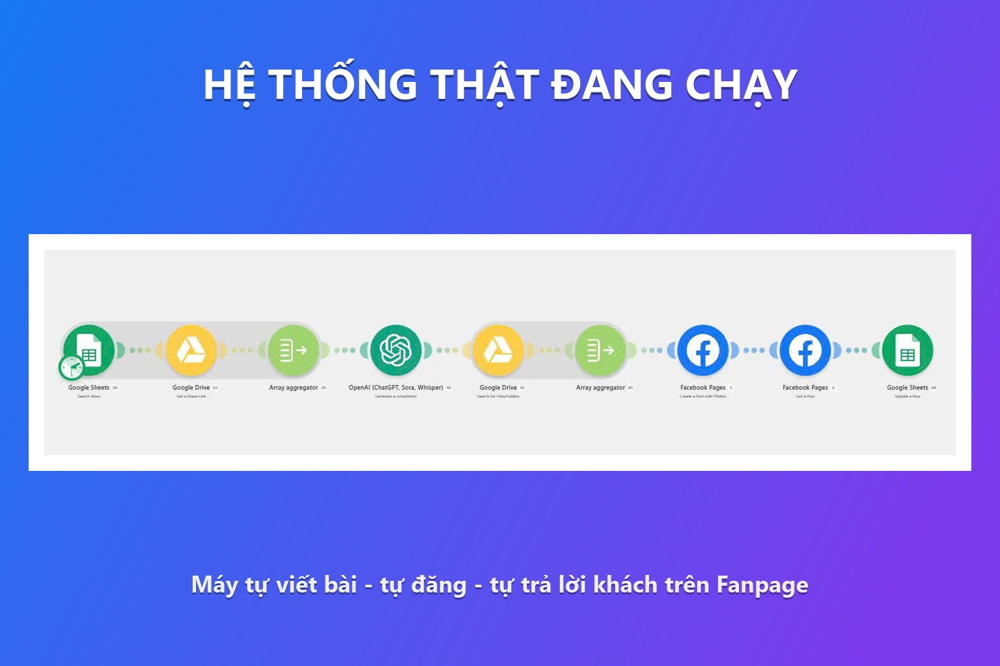
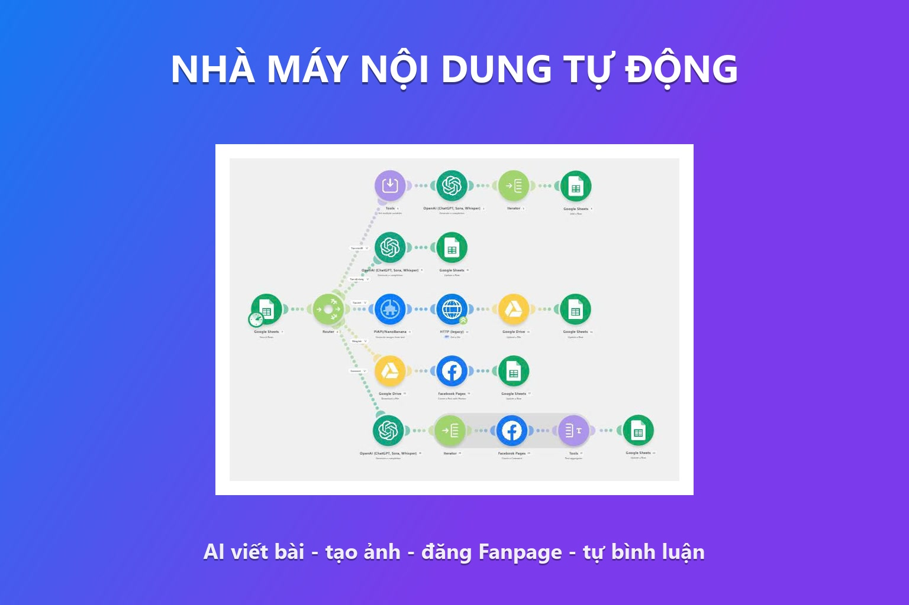
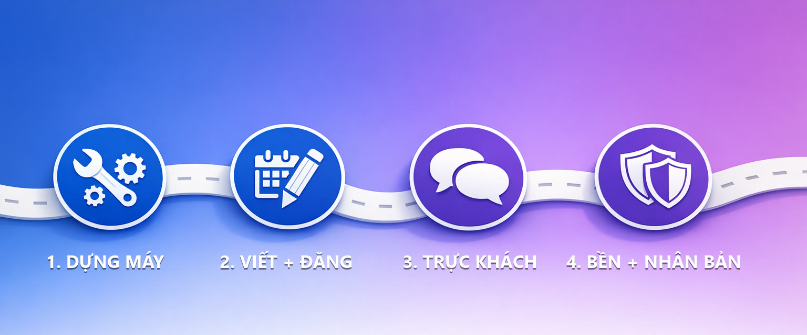
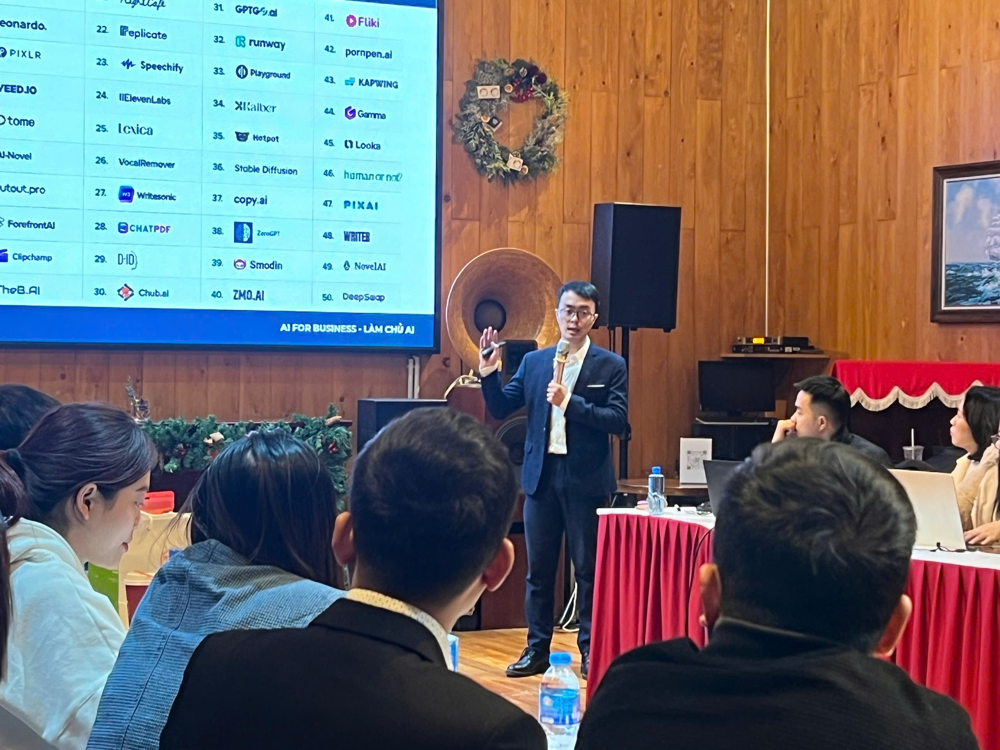
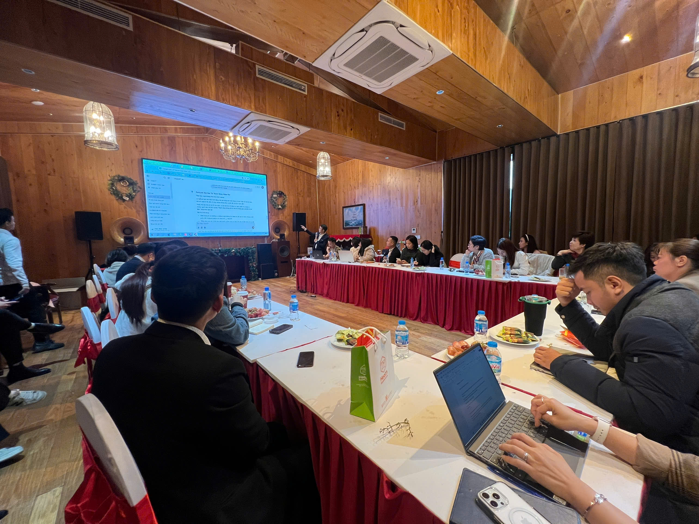
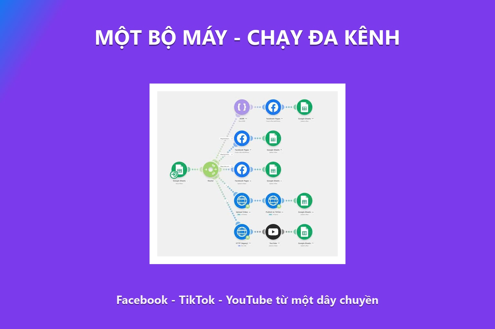
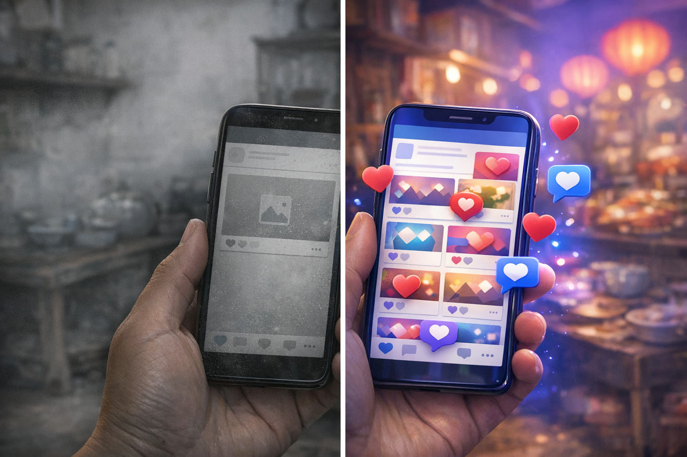

Fanpage tự vận hành - ưu đãi mở bán sớmĐăng ký ngay
FANPAGE CỦA BẠN CÓ THỂ TỰ ĐĂNG BÀI VÀ TỰ TRẢ LỜI KHÁCH - CẢ KHI BẠN ĐANG NGỦ
Cách tự tay dựng một bộ máy khiến Fanpage đăng đều đúng giọng thương hiệu và rep khách 24/7, mà bạn không phải ngồi ôm điện thoại canh page nữa - dù bạn chưa từng đụng tới một dòng kỹ thuật nào.
(kể cả khi bạn đã thử thuê người, thử app đóng hộp, hay từng bỏ page nằm im vì hết giờ)
Ưu đãi mở bán sớm cho nhóm học đầu tiên (Giá gốc 2.400.000đ)
4 chương15 bài cầm tay chỉ việc4 quà tặng đi kèm

Cuộc vật lộn mỗi ngày với một Fanpage mà bạn phải tự ôm
"Tôi mở Fanpage để xây thương hiệu, nhưng cuối cùng cái page lại trở thành ông chủ của tôi - nó đòi tôi phục vụ mỗi ngày."
Bạn còn nhớ cảm giác mới lập Fanpage không? Hào hứng, đặt mục tiêu đăng đều mỗi ngày, trả lời khách thật nhanh để giữ chân họ. Rồi thực tế ập đến. Sáng lo sản phẩm, trưa lo khách, chiều lo nhân sự - đến tối mở page ra thì đã 11 giờ đêm, vài comment khách hỏi từ sáng vẫn nằm đó chưa ai trả lời. Bài thì ba hôm chưa đăng. Bạn tự nhủ "mai làm bù", nhưng mai lại có việc khác.
Đã bao giờ bạn đăng bài phập phù - lúc đăng dồn ba bài một hôm, lúc cả tuần im lặng, thuật toán tụt, người theo dõi quên mất bạn?
Đã bao giờ khách hỏi mà không ai trả lời kịp - comment để lâu, inbox trễ, khách nguội rồi mua chỗ khác?
Hay bạn thuê người viết bài thì tốn tiền mà bài ra vô hồn, không đúng giọng thương hiệu, đọc là biết "bài thuê"?
Nếu đúng - thì đây là điều bạn cần đọc tới cuối.
Tôi đã thử đủ mọi cách mà người ta bảo
Thuê cộng tác viên viết bài - được hai tháng thì bạn ấy bận, bài đăng lại đứt quãng, mà giọng bài chẳng bao giờ giống mình.
Mua app auto Fanpage trọn gói - trả phí đều mỗi tháng, đến khi ngừng trả là mất sạch, còn dữ liệu khách nằm trong tay bên khác.
Đặt lịch đăng bằng công cụ có sẵn của Facebook - đăng thì được, nhưng vẫn phải tự ngồi viết từng bài, tự trả lời từng comment - không giải phóng được thời gian.
Nhờ nhân viên kiêm nhiệm trực page - bạn ấy vốn đã ngập việc, page thành thứ làm cho xong, khách hỏi kỹ là bí.
Tự cày một mình vào buổi tối - được đúng một tuần thì đuối, rồi lại bỏ.
Vấn đề không phải mình lười - mà là mình đang cố làm bằng tay một việc lẽ ra máy nên làm.
Rồi tôi khám phá ra điều thay đổi tất cả

Trong lúc dựng hệ thống tự động cho khách của mình - những thương hiệu thật như một chuỗi nha khoa, một xưởng nội thất, một shop rêu trang trí - tôi phát hiện: bạn hoàn toàn có thể ghép các công cụ AI và một nền tảng nối tự động (tên nó là Make) lại thành một dây chuyền chạy thay bạn phần việc lặp đi lặp lại mỗi ngày trên Fanpage.
Không phải app đóng hộp thuê hàng tháng. Đây là bộ máy của chính bạn, đặt trên tài khoản của bạn, viết đúng giọng thương hiệu bạn cài vào - và một khi dựng xong, nó chạy đều mà không đòi bạn ngồi canh.
Tôi gói toàn bộ cách làm lại thành "Fanpage Tự Vận Hành".
"Fanpage tự vận hành phần lặp tay - đăng đều, rep khách 24/7, bạn không phải ngồi canh"
✓ Đăng bài đều đặn đúng giọng thương hiệu mà không phải ngồi viết từng bài.
✓ Trả lời comment và nhắn tin khách gần như tức thì, kể cả ngoài giờ hành chính.
✓ Tự tạo ảnh đi kèm bài, page nhìn chỉn chu mà không cần thuê thiết kế cho từng post.
✓ Có một trợ lý trả lời tự động (chatbot) đón khách 24/7, chạy trong ngưỡng an toàn.
Hình dung một buổi tối bạn đóng máy tính lúc 6 giờ, không phải mở lại điện thoại lúc 11 giờ đêm để trả lời comment. Page vẫn đăng bài đúng lịch. Khách vẫn được rep gần như ngay lập tức. Bạn giải phóng hàng giờ mỗi ngày để quay lại lo phần chỉ con người mới làm được: sản phẩm, khách lớn, chiến lược.
Là gì: Khóa online 4 chương - 15 bài, dạy tự tay dựng hệ thống Make khiến Fanpage tự đăng bài + tự trả lời khách.
Cho ai: Chủ SME đội mỏng, trưởng phòng marketing tự lo 1-vài Fanpage một mình.
Làm được gì: Page tự đăng đều đúng giọng thương hiệu, tự rep khách 24/7, không cần ngồi trực.
KHÔNG phải: App đóng hộp thuê hàng tháng, không cam kết doanh số hay lượng đơn.
Lộ trình đưa Fanpage của bạn tự chạy - 4 chương, 15 bài

Chương 1 - Dựng bộ máy tự động + cài giọng thương hiệu (4 bài)
Kết quả: có sẵn hệ thống nối với Fanpage và một "hồ sơ giọng" khiến máy viết đúng chất riêng của bạn.
Chương 2 - Máy tự viết bài, tạo ảnh, đăng đúng lịch (4 bài)
Kết quả: page đều bài mỗi tuần mà bạn không phải ngồi viết và đăng từng cái.
Chương 3 - Máy tự trực khách 24/7 (4 bài)
Kết quả: khách được phản hồi nhanh mọi khung giờ, không còn comment bỏ quên.
Chương 4 - Chạy bền không bị Facebook khóa + nhân bản (3 bài)
Kết quả: bộ máy chạy an toàn dài lâu, và bạn nhân được sang page hoặc khách khác.
Giá gốc niêm yết 2.400.000đ - mức ưu đãi mở bán sớm chỉ còn 868.000đ cho nhóm học đầu tiên.
So với thuê ngoài dựng hệ thống automation cho một Fanpage, hay trả phí hàng tháng cho app auto đóng hộp, đây là khoản đầu tư một lần để có bộ máy của chính bạn, không phụ thuộc ai.
Câu hỏi thường gặp
Khóa đi từ con số 0, có buổi Zoom cầm tay và bộ mẫu điền-là-chạy. Người chưa từng đụng kỹ thuật vẫn dựng được.
Của chính bạn - bộ máy thuộc về bạn, không phụ thuộc ai, không mất khi ngừng trả phí bên thứ ba.
Có hẳn một chương (Chương 4) dạy ngưỡng an toàn để auto tương tác không dính cờ spam, chạy bền lâu dài.
Có buổi Zoom cầm tay dựng máy trực tiếp cùng người hướng dẫn, và cộng đồng riêng để hỏi đáp khi bí.
Về con số
868.000đ một lần, thay vì trả phí app hàng tháng mãi mãi hoặc thuê ngoài mỗi lần cần bài mới.
Về cảm xúc
Thôi cảm giác page là "ông chủ" đòi bạn phục vụ mỗi tối - bạn chủ động điều khiển lại.
Về chính bạn
Tự tay dựng ra một hệ thống thật, kỹ năng mang theo dùng được cho mọi page sau này.
Ưu đãi mở bán sớm đóng sau
Lý do giới hạn: mức 868.000đ chỉ dành cho nhóm học đầu tiên khi khóa mới mở bán để test.
00
ngày
00
giờ
00
phút
00
giây
Ưu đãi mở bán sớm cho nhóm học đầu tiên - chỉ áp dụng trong thời gian đếm ngược.
BONUS 1 - Buổi Zoom Cầm Tay Dựng Máy: dựng bộ máy cùng lúc với người hướng dẫn, mắc ở đâu gỡ ngay ở đó. Giải nỗi lo "xem video một mình dễ tắc giữa chừng rồi bỏ".
BONUS 2 - Bộ Dây Chuyền Điền-Là-Chạy: scenarios mẫu sẵn cho cả 7 việc (viết bài, tạo ảnh, đăng bài, trả lời comment, nhắn tin, thả tim, chatbot). Giải nỗi lo "sợ dựng từ đầu sai bước".
BONUS 3 - Trợ Lý Cài Giọng Thương Hiệu: công cụ viết ra "hồ sơ giọng" để máy viết bài đúng chất riêng, không vô hồn kiểu robot.
BONUS 4 - Cộng Đồng Người Cùng Dựng Máy: nhóm riêng để hỏi đáp, cập nhật khi Facebook hoặc công cụ đổi. Giải nỗi lo "làm một mình, kẹt là kẹt luôn".
Người đã dựng bộ máy này cho những thương hiệu thật
Lê Thanh Sơn
Chuyên gia & diễn giả đào tạo ứng dụng AI cho doanh nghiệp
Khóa này không dạy lý thuyết chép trên mạng. Cách làm trong khóa là chính cách người hướng dẫn đã dùng để dựng hệ thống tự động cho các thương hiệu thật: một xưởng nội thất (Trường Hưng), một phòng nha (Xanh Dental), một shop rêu trang trí (Reu Decor), một phòng nha khác (Nha khoa Trung Hậu), một thương hiệu (Jaya). Mỗi nơi một ngành, một giọng khác nhau - và bộ máy đều thích ứng được. Điều bạn học không phải là "biết về" tự động hóa, mà là tự tay dựng ra thứ đang chạy thật ngoài đời.
Website: lethanhson.net · Zalo: 0343928094

Đang giảng dạy thực chiến

Workshop ứng dụng AI cho doanh nghiệp

Ảnh chụp màn hình hệ thống thật đang vận hành - một dây chuyền chạy đa kênh
Học viên các lớp AI của thầy Sơn nói gì
Cảm nhận thật từ học viên đã học các lớp ứng dụng AI do Lê Thanh Sơn trực tiếp hướng dẫn. Khóa "Fanpage Tự Vận Hành" đang mở bán sớm - lời chứng của chính khóa sẽ được cập nhật sau nhóm học đầu tiên.
★★★★★
"Qua thầy hướng dẫn, các bước rất dễ dàng, mình áp dụng làm được luôn, tiến bộ rất rõ rệt. Không chỉ cho công việc mà còn áp dụng được cho đa lĩnh vực. Mình đánh giá khoảng 200% so với ChatGPT cũ hay Gemini, thậm chí có thể hơn."
Bùi Văn HưngBất Động Sản
★★★★★
"Em ứng dụng vào chuyên môn thấy tốt hơn nhiều. Mới xem tới buổi 2 mà áp dụng vào đã thấy làm khỏe hơn nhiều ạ!"
BS Nguyễn Văn ThắngBác sĩ Nha khoa
★★★★★
"Kiến thức thực chiến rất hữu ích, học là áp dụng được ngay vào case thực tế. Học xong 3 buổi, level dùng AI của em tăng hẳn, nhất là phần quản lý dự án."
Chị Trần Thị PhươngHọc viên ứng dụng AI
Sự thay đổi bạn có thể kỳ vọng

Trước "Fanpage Tự Vận Hành"
Đăng bài phập phù, nhớ ra mới đăng.
Comment và inbox của khách để lâu mới trả lời.
Tối nào cũng ôm điện thoại canh page.
Thuê người thì tốn tiền, bài lại không đúng giọng.
Sau "Fanpage Tự Vận Hành"
Page đăng đều đặn đúng lịch, đúng giọng thương hiệu.
Khách được phản hồi nhanh gần như tức thì, kể cả ngoài giờ.
Bạn rảnh tay lo sản phẩm và khách lớn.
Bộ máy đặt trên tài khoản của bạn - không phụ thuộc ai.